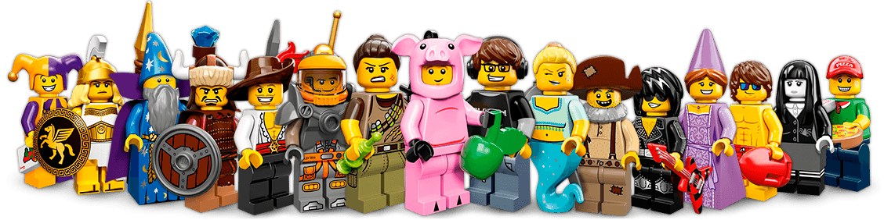

Accessibility testing
In the eye of the beholder
About myself
Wilco Fiers
Live in Utrecht, Netherlands
Deque Systems, USA
Play D&D, Kingdom of Kalamar
Dungeons & Dragons
An accessibility story
The Party of Adventurers
Paladin of Semantic HTML
CSS Warrior
JS Wizard
Marketing Rogue
The Quest
The town has been corrupted with negative energy, and the only thing that can stop this is the elixir of accessibility.
Knowledge check
Tome of WCAG,
Guarded by the Beholder of accessibility
The Beholder
"Satisfy my needs, and I will grant you the elixor of accessibility."
The giant eye commands
Day 1
"Add titles to your
'Read more'links"The first eye commands.
"Change that 'Start here' link to a
<button>"The second eye commands
"Wrap those 'Address' texts in
<h2>Elements"The third eye commands
Day 2
"Add a
role="link"to that that 'Start here' button"The forth eye commands.
"Change the alt of the logo to
'Homepage Bigcorp'"the fifth eye commands.
"Change the text of those
'Read more'links"The sixth eye commands.
Day 3
"Change that alt back to `'Logo Bigcorp'"
The seventh eye commands
"Change that
<h2>on the address back to a strong"The eight eye commands
"Replace that
<button role="link">with a real link"The ninth eye commands
Day 4
Defeated, the party returns to their home town.
"Accessibility is impossible" they announce.
And so the negative force of inaccessibility grew.
The end
Sound familiar?
What happened?
We all use WCAG
But we don't agree on what it means
Interpreting WCAG
One more game, if you'll let me
No character sheets, just two questions
Is this a WCAG violation?
Would you recommend it?
Skipping heading levels
<h1>Welcome to Kalamar</h1>
<h3>The kingdom of prosperity</h3>
Is this a WCAG violation?
Would you recommend it?
Require landmarks
<header>...</header>
<nav>...</nav>
<main>...</main>
<aside>...</aside>
<footer>...</footer>
Is this a WCAG violation?
Would you recommend it?
Use of valid ARIA
<button aria-checked="true">
I vow to cause no inaccessibility
</button>
Is this a WCAG violation?
Would you recommend it?
Invalid closing tags
<strong><p>
Important!</strong> ...
</p>
Is this a WCAG violation?
Would you recommend it?
Prioritizing
No keyboard traps
Form fields have labels
Use landmarks
Don't skip heading levels
Draw the line
Violations:
No keyboard traps
Form fields have labels
Best practice:
Use landmarks
Don't skip heading levels
I think :)
Quest for consistency
Highway to hell
Interpretations
In 5 years, I have worked with:
AccessibilityNL Handbook
Drempelvrij (Barrier free)
Webrichtlijnen (Web guidelines)
Deque Way
Tools
Each with their own take on what is and is not accessible
Axe-core
WAVE
Tenon
HTML Code sniffer
...
australia.gov.au
A comparison
| Axe-core | Tenon | WAVE |
|---|---|---|
| 1.1.1 | 1.1.1 | 3.3.2 |
| 3.3.2 | 2.4.3 | |
| 4.1.1 | 4.1.1 | |
| 4.1.2 | 4.1.2 | |
| 7 errors | 8 errors | 2 errors |
The beholder
Ask 10 accessibility experts,
and you'll get 11 answers.
Harmonization
Imagine there's no heaven
Benefits
Reduce confusion
Improve developer trust
Lower remediation efforts
Separate our opinion
from our test method.
Steps to harmonizing
1. Standardized test description
How to compare one test to another
What is our common vocabulary
What are the qualities we all expect
2. Compare different test methods
What exactly do we test
How do we test it
How do we describe findings
3. Bring together commonalities
Which test give the best results in terms of:
Accuracy
Performance
Transparency
4. Tease out our differences
Where do we disagree
Why do we disagree
How can we come to an agreement
ACT Task Force
Accessibility Conformance Testing
Part of the WCAG Working Group

ACT Taskforce Goals
Common format for rules
Test accuracy for rules
WCAG Rules repository
ACT Rules
A test for (part of) an accessibility requirement,
applicable to any content of a certain technology
ACT Framework
A future W3C Recommendation
Describe how to write rules
And how to ensure their qualty
Who uses rules
Accessibility auditors
Automated test tools
Quality assurance teams
Timeline
2017: Draft ACT Framework
2018: Test implementation of rules
2019: Public rule repository
But wait, WCAG Techniques?
Techniques are for developers,
what rules will be for testers.
Don't require WCAG Expertise
Change as technologies do
Non-exhaustive
Auto-WCAG Community
Write rules, not tools.
Write rules to test WCAG
Monthly review meetings
Open to anyone
Example: Page Title (1/5)
---
rule_id: SC3-1-1-html
name: Primary language of page
test_mode: automatic
criteria:
- 3.1.1 # Language of Page (Level A)
authors:
- Annika Nietzio
---
Example: Page Title (2/5)
```markdown
Description
This test checks that the primary language of the web content can be programmatically determined.
```
Example: Page Title (3/5)
```markdown
Test procedure
Selector
Select the html element.
```
Example: Page Title (4/5)
```markdown
Step 1
If lang attribute exists:
L1 = value of lang attribute.
If neither lang nor xml:lang are specified, return Failed-1
Else, continue with Step2.
```
Example: Page Title (5/5)
```markdown
Step 2
Compare L1 to the list of all valid languages.
If L1 is not on the list, return Failed-2
Else, return Passed-1
```
Users
Axe-core
SiteImprove
European Union (EIII)
Join us today!
w3.org/community/auto-wcag/
Go to "Join this group"
Aside: Automation
Accessibility Test Tools (ATTs)
20% - 50% (in volume)
Things ATTs do (1 / 2)
Check for alternatives
image
alt,aria-label, video<caption>Check programmatic association:
form field labels,
longdesc,aria-ownsValidate ARIA compliance
Things ATTs do (2 / 2)
Required accessibility features:
lang,title, bypass blocksMeasure color contrast
Table headers
Parsing
Things ATTs don't (1 / 2)
Language detection
Image recognition / OCR
Test for events (onkeydown, onchange, etc.)
Things ATTs don't (2 / 2)
Compare page titles
Contrast in images
Detect keyboard traps
Accessibility Unit Tests
Write these yourself:
Where the focus should be
Does ARIA get updated
Does it work with key events
ìt('opens a dialog', function () {
myButton.activate();
expect(myDialog.state).toBe('open');
expect(myDialog.elm.getAttribute('role'))
.toBe('dialog');
// Check focus moved
expect(document.activeElement)
.toBe(myDialog.elm);
});
Questions?
@wilcofiers
github.com/wilcofiers